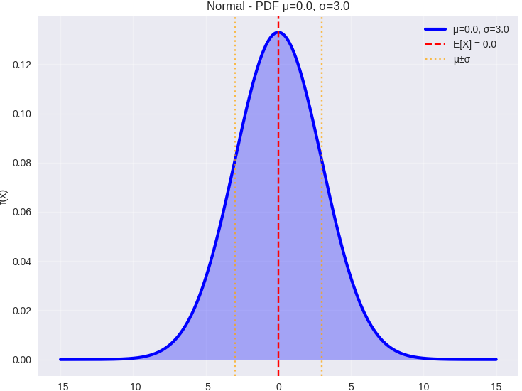
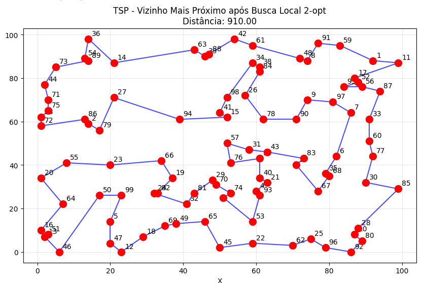
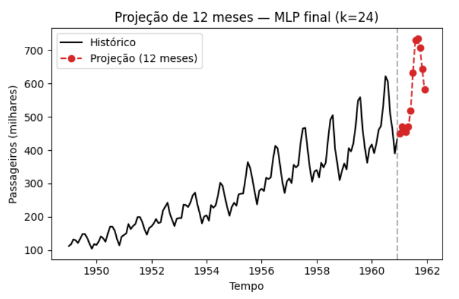

Teaching
From theory to practice
In my courses, concepts start from real industrial engineering problems: planning production, managing inventory, choosing routes, forecasting demand. Worked examples and support materials, such as ready-to-use Google Colab notebooks, help students try out the ideas. Basic programming knowledge is recommended.
Undergraduate
Industrial Engineering, UFSCar Sorocaba

Probabilistic Models for Industrial Engineering
Probability and statistical inference applied to industrial engineering problems: random variables, discrete and continuous distributions, the Central Limit Theorem and goodness-of-fit tests (chi-square, Kolmogorov-Smirnov).
Support material · Google Colab
Widely used probability distributions
Operations Research 3
Modern operations research topics for production and logistics: mixed-integer linear programming, multi-objective optimization, stochastic programming, heuristics and metaheuristics, implemented in Python with the Gurobi and HiGHS solvers.
Support material · Google Colab
Visualizing search in population-based metaheuristicsGraduate
Graduate Program in Industrial Engineering (PPGEPS)

Topics in Artificial Intelligence
Machine learning applied to industrial engineering: exploratory data analysis, unsupervised learning (clustering and dimensionality reduction), supervised learning (classification and regression) and reinforcement learning, with Markov decision processes and their connection to operations research.
Support material · Google Colab
Artificial neural networks for time-series forecasting